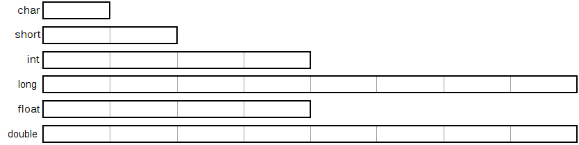

Integral Types
An integral data type is a type that is fundamentally an integer. That is, it has no fractional portion. Integral types come in different sizes.
Relative size of data types (typical 64-bit computer: LP64) 
Note that the C Standard does not specify the sizes of any of the types except char which is always 1 byte. The sizes shown above are the minimum sizes that the types must support on a 64-bit computer.It is an unfortuante historical accident that the smallest integer type is named char, which is short for character. It's unfortunate because, too often, students and beginner programmers equate the term char with "a letter of the English alphabet". There is nothing about the char data type that implies anything about the English alphabet. A better name, used in other programming languages, would have been byte, as that is more accurately what it represents: a single byte. This is even more obvious when you consider that a char can be negative, which certainly doesn't (and can't) represent any letter. Keep this in mind when dealing with the char data type. It's simply a very small integer.
This table shows the range of values for the integral types on a typical, modern 64-bit (LP64) computer:
Type Bytes Also called Range of values
(Binary)Range of values
(Decimal)signed char 1 char
(compiler-dependent)-27 to 27 - 1 -128 to 127 unsigned char 1 char
(compiler-dependent)0 to 28 - 1 0 to 255 signed short int 2 short
short int
signed short-215 to 215 - 1 -32,768 to 32,767 unsigned short int 2 unsigned short 0 to 216 - 1 0 to 65,535 signed int 4 int
signed-231 to 231 - 1 -2,147,483,648 to
2,147,483,647unsigned int 4 unsigned 0 to 232 - 1 0 to 4,294,967,295 signed long int 8 long
long int
signed long-263 to 263 - 1 -9,223,372,036,854,775,808 to
9,223,372,036,854,775,807unsigned long int 8 unsigned long 0 to 264 - 1 0 to 18,446,744,073,709,551,615
The ranges for data types are defined in stdint.h. Here's a sample from the header file:
/* Minimum for largest signed integral type. */ define INTMAX_MIN (-__INT64_C(9223372036854775807)-1) /* Maximum for largest signed integral type. */ define INTMAX_MAX (__INT64_C(9223372036854775807))
Technically, there is just char and int, but the int types are extended with modifiers: signed, unsigned, short, long, which gives the possible combinations listed above. The order of the type and modifiers are ignored. These all mean the same thing:
Also, when used with long or short the int is optional (these are the same as above):unsigned long int unsigned int long long int unsigned long unsigned int int long unsigned int unsigned long
unsigned long long unsigned
However, most code would commonly present the above as: unsigned long int or unsigned long (You should stick to this convention.)
This table shows the sizes of long integers used in Microsoft Windows (LLP64). (Most of the rest of the world uses 8 bytes as above. Keep this in mind if you plan on working with Windows.)
signed long int 4 long
long int
signed long-231 to 231 - 1 -2,147,483,648 to
2,147,483,647unsigned long int 4 unsigned long 0 to 232 - 1 0 to 4,294,967,295
The only other thing that the Standard states is this:
sizeof(char) <= sizeof(short) <= sizeof(int) <= sizeof(long) <= sizeof(long long)
This table includes the binary values:C99 introduces the long long type, which is 8-bytes on almost all modern 64-bit systems. Since the long type is also 8-bytes on most systems, this currently doesn't improve things (except when working with Microsoft Windows).
A signed integer that is 32 bits wide and can store values in the range: -2,147,483,648 to 2,147,483,647
Type Binary Range Decimal Range signed char 10000000
to
01111111-128
to
127unsigned char 00000000
to
111111110
to
255signed short 1000000000000000
to
0111111111111111-32,768
to
32,767unsigned short 0000000000000000
to
11111111111111110
to
65,535signed int 10000000000000000000000000000000
to
01111111111111111111111111111111-2,147,483,648
to
2,147,483,647unsigned int 00000000000000000000000000000000
to
111111111111111111111111111111110
to
4,294,967,295signed long 1 followed by 63 zeros
to
0 followed by 63 ones-9,223,372,036,854,775,808
to
9,223,372,036,854,775,807unsigned long [ 64 zeros ]
to
[ 64 ones ]0
to
18,446,744,073,709,551,615
A signed char that is 8 bits wide and can store values in the range: -128 to 127
What happens when you try to store a value that is too large for the data type? With unsigned values, it just "wraps" back around to 0. Think of the bits being sort of like an odometer on a car. Once the odometer gets to 999999, it will "wrap" back around to 0. So, an unsigned char with a value of 255 will become 0:
11111111 + 1 --------- 000000000
With signed numbers, the result is undefined. It could be anything and do anything, including crashing the program. It's up to the particular system. Sometimes you may get kind of a "wrapping" like with unsigned, but this is not guaranteed. The difference is that instead of going from the largest positive value back to 0, the bits go from the largest positive value to the smallest negative value. (e.g. 127 + 1 is -128).
Here's a sample.
Why did Microsoft choose the LLP64 model instead of LP64 like everyone else? Incidentally, that article is written by Raymond Chen. He is the Best. Microsoft. Blogger. Ever. If you want to become an expert Windows programmer, you need to know this!
Other interesting information for the curious student: here, here, and here (PDF).
Literal Constants
We know that a literal constant like 42 is an int and that a literal constant like 42.0 is a double.42.0F
42L vs. 42l
42U
42UL or 42LU
char c = 'A';
printf("sizeof(c) is %2i\n", sizeof(c)); /* char variable */
printf("sizeof('A') is %2i\n", sizeof('A')); /* char literal */
sizeof(c) is 1
sizeof('A') is 4
Usually, we write literal integral values using decimal (base 10) notation. C provides two other forms: octal (base 8) and hexadecimal (base 16) (C++14 adds a binary literal. Woohoo!)
01 014 077 01472 077634L
0x10 0X10 0x14 0x17AF 0xFFFF 0xabF10CD8L
Be careful not to include a leading 0 (zero) when writing decimal integers. In mathematics, these numbers both have the same value: 77 and 077. However, in C, the number 077 is actually an octal number and has the decimal value of 56.
Floating Point Types
Unlike the integral types, floating point types are not divided into signed and unsigned. All floating point types are signed only. Floating point numbers follow the IEEE-754 Floating Point Standard. Here's more information about floating point numbers than you'll probably ever need. Here are the approximate ranges of the IEEE-754 floating point numbers on Intel x86 computers:Some floating point constants. These are all of type double:
Type Size Smallest Postive Value Largest Positive Value Precision float 4 1.1754 x 10-38 3.4028 x 1038 6 digits double 8 2.2250 x 10-308 1.7976 x 10308 15 digits long double 10* 3.3621 x 10-4932 1.1897 x 104932 19 digits
To indicate that the type is float, you must append the letter f or F:42.0 42.0e0 42. 4.2e1 4.2E+1 .42e2 420.e-1 42e0 42.E0
To indicate that the type is long double, you must append the letter l (lowercase 'L') or L:42.0f 42.0e0f 42.F 4.2e1F etc...
In practice, NEVER use the lowercase L (which looks very similar to the number one: 1), as it will certainly cause confusion. (See above.)42.0L 42.0e0L 42.l 4.2e1l etc...
*Here are the sizes of floating point numbers on various C compilers under 32-bit:A literal float, double, or long double must contain at least one decimal point or be written in scientific notation (e.g. with e notation) as the examples above show.
With 64-bit, all of the sizes shown above are the same except the long double which is 16 bytes for GCC/MinGW/Clang.
GNU gcc Borland Microsoft
Partial float.h listing
Another toy
Here's another sample with all types.
See this refresher on IEEE-754 notation for more information.
Comparison of data sizes with various compilers:
Compiler char short int long long long float double long double void* size_t intptr_t 32-bit Microsoft 1 2 4 4 8 4 8 8 4 4 4 32-bit GNU gcc 1 2 4 4 8 4 8 12 4 4 4 32-bit Clang 1 2 4 4 8 4 8 12 4 4 4 64-bit Microsoft 1 2 4 4 8 4 8 8 8 8 8 64-bit GNU gcc 1 2 4 8 8 4 8 16 8 8 8 64-bit Clang 1 2 4 8 8 4 8 16 8 8 8 64-bit MinGW 1 2 4 4 8 4 8 16 8 8 8
The typedef Keyword
Suppose we want to add a boolean type to C. (There isn't one, so we typically use int in place of a boolean.) We've already done it using #define: hereTo declare a variable, we simply do this:
These cause the compiler to allocate space for each variable, based on it's type.int a; /* Create an integer named a */ unsigned char b; /* Create an unsigned char named b */ short int c; /* Create a short integer named c */ float d; /* Create a float named d */ unsigned char * e; /* Create an unsigned char pointer named e */
If we want to create a new type (instead of a new variable), we add the typedef keyword:
You can think of these type definitions as aliases for other types. To create a new variable of type a:typedef int a; /* Create a new type named a */ typedef unsigned char b; /* Create a new type named b */ typedef short int c; /* Create a new type named c */ typedef float d; /* Create a new type named d */ typedef unsigned char * e; /* Create a new type named e */
Of course, this makes no sense whatsoever. For any real use, you need to give the typedefs meaningful names. Compare to #define:a i; /* Create an 'a' variable named i */ b j; /* Create a 'b' variable named j */
Examples:
Summary:BOOL playing, paused; /* Booleans for a DVD player */ BYTE next, previous; /* For scanning bytes in memory */ CURRENCY tax, discount; /* To calculate total price */ PCHAR inbuf, outbuf; /* To manipulate strings */
This is the same:/* Each is an array of 10 unsigned char pointers */ unsigned char *a[10]; unsigned char *b[10]; unsigned char *c[10]; unsigned char *d[10];
typedef unsigned char *ShortString[10]; /* ShortString is a new type */ /* An array of 10 unsigned char pointers */ ShortString a, b, c, d;
void foo(void)
{
typedef int BOOL; /* Is visible only in this function */
#define BOOL int /* Is visible in every function below this one */
if (/* whatever */)
{
typedef int INT32; /* Visible only in if */
/* Other stuff */
}
/* Other stuff */
}
#define CPTR1 char *
typedef char * CPTR2;
CPTR1 p1, p2; /* What is the type of p1 and p2? */
CPTR2 p3, p4; /* What is the type of p3 and p4? */
printf("%i, %i\n", sizeof(p1), sizeof(p2));
printf("%i, %i\n", sizeof(p3), sizeof(p4));